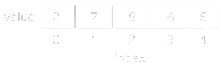

Types of Data Structures
Data Structures an be classified into Primitive data structures and Non-Primitive data
structures
Primitive Data Types: A primitive data type is pre-defined by the programming language. The size
and type of variable values are specified, and it has no additional methods.
Non-Primitive Data Types: These data types are not actually defined by the programming language
but are created by the programmer.

Primitive Data Structures
Primitive data structures consist of the numbers and the characters which are built in programs. These can be manipulated or operated directly by the machine level instructions. Basic data types such as Integer, Real, Character, and Boolean come under primitive data structures. These data types are also known as simple data types because they consist of characters that cannot be divided.
Non-primitive Data Structures
Non-primitive data structures are those that are derived from primitive data structures. These data structures cannot be operated or manipulated directly by the machine level instructions. They focus on formation of a set of data elements that is either homogeneous (same data type) or heterogeneous (different data type). These are further divided into linear and non-linear data structure based on the structure and arrangement of data.
Linear Data Structure
A data structure that maintains a linear relationship among its elements is called a linear data structure. Here, the data is arranged in a linear fashion. But in the memory, the arrangement may not be sequential.
-
Array
Array, in general, refers to an orderly arrangement of data elements. Array is a type of data structure that stores data elements in adjacent locations. Array is considered as linear data structure that stores elements of same data types. Hence, it is also called as a linear homogenous data structure.
Array index value always starts from 0
To know more visit, Array